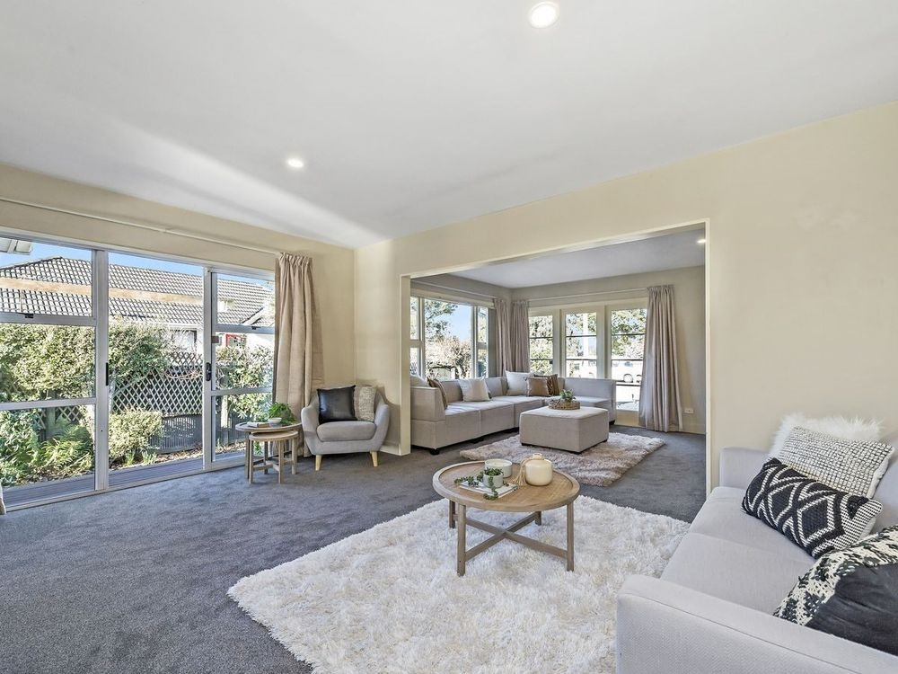
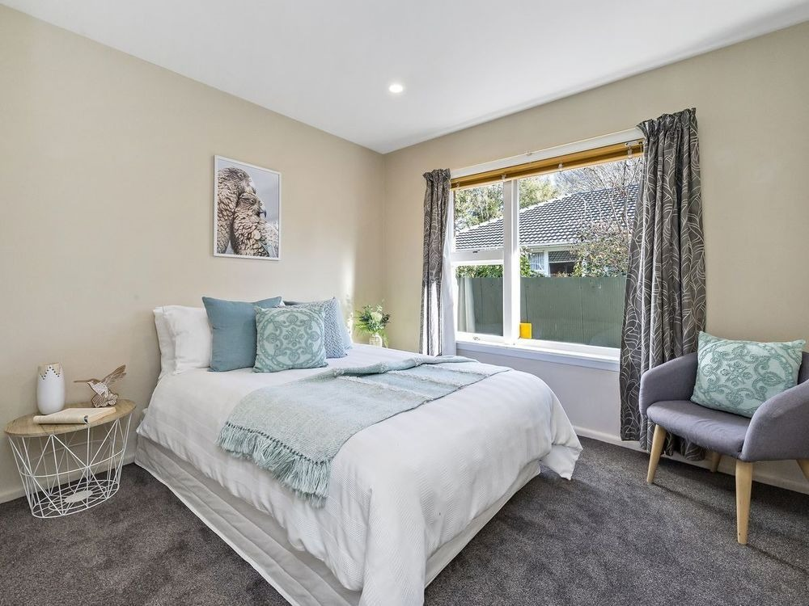
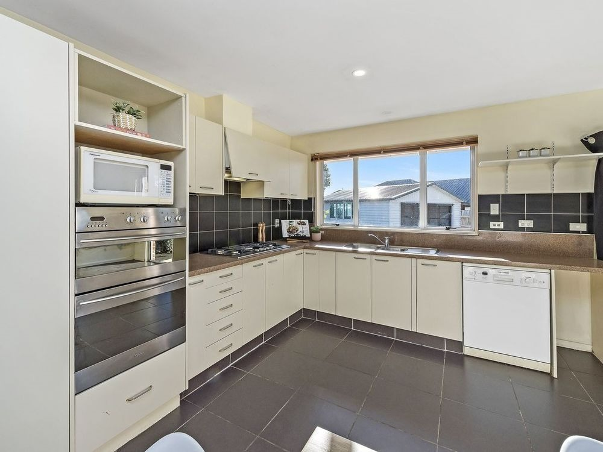
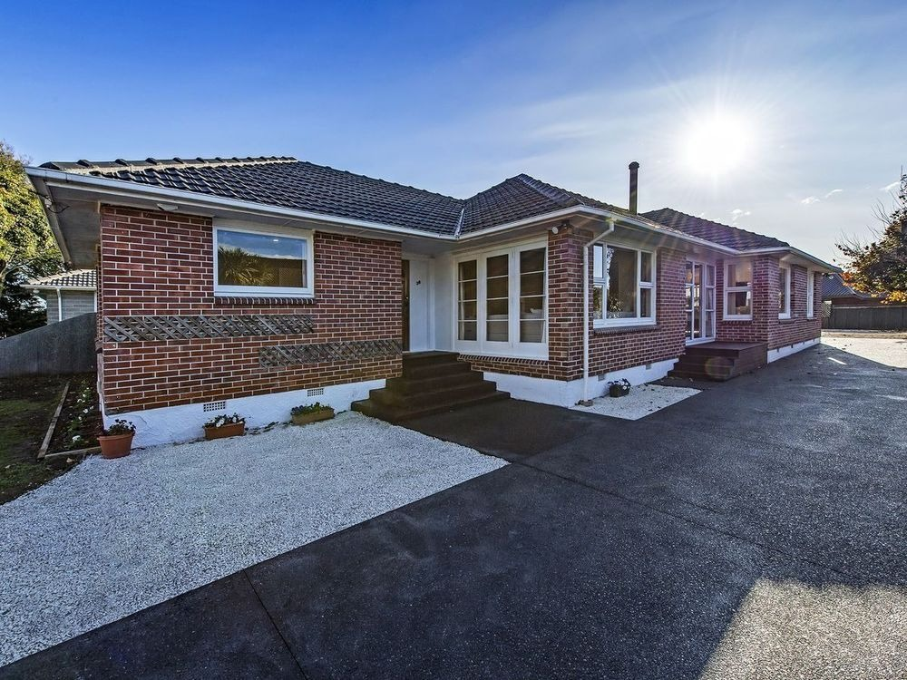

A warm, well-kept brick home with room to live, study, and grow — right next door to St Timothy's Church. Affordable, intentional, and built for community.
Kendal House is a solid, spacious brick home set up for shared Christian living. Four bedrooms, generous living areas, a fully equipped kitchen, and a cosy log burner for Christchurch winters — all in Burnside with great transport links.
Comfortable double rooms with quality bedding, storage, and natural light
Live alongside others who share your faith — growing together in an intentional household
A shared commitment to directing life together — rhythms, respect, and Christ at the centre
Easy bus access to UC & the city, close to Laidlaw College, next to St Timothy's
Subsidised rent for ministry role holders — affordable for all residents
St Timothy's is almost next door — walk to church, youth group, and more
Kendal House is a character brick home with modern comforts. Here's what you'll find when you step through the door.

The heart of Kendal House. A spacious living room with comfortable sofas and plenty of natural light. This is where Bible studies happen, where movie nights unfold, and where you'll find someone to chat with at the end of a long day.

Each bedroom at Kendal House is a generous, private space — big enough for a double bed, study desk, and armchair. Natural light, quality bedding, and a calm, inviting feel. Your room is yours to make your own.

No tiny kitchenette here. Kendal House has a full-size kitchen with gas cooking, a double oven, microwave, dishwasher, and plenty of bench and storage space. A cosy log burner in the adjoining dining area keeps the whole space warm through winter. Whether you're cooking solo or preparing a shared flat dinner, there's room for everyone.

Kendal House is a well-maintained 1960s brick bungalow on an easy care section. Off-street parking, a tidy garden, and that solid brick warmth that newer builds just can't match. It's right next door to St Timothy's — you'll walk to church in under a minute.
Kendal House isn't just about having a roof over your head. It's about doing life together — shared meals, Bible study, movie nights, and genuine friendship rooted in faith. Central to this is our shared covenant that guides our life together and outlines our core house values.


Our relationships are foundational to creating a loving, supportive, and Christ-centred household where each person can grow spiritually, live responsibly, and contribute positively to the community. To guide our interactions, encourage mutual care, and help us maintain a harmonious and welcoming home for all residents, we commit to these values:
Cultivating a home marked by kindness, forgiveness, and mutual respect.
Communicating truthfully and graciously, fostering openness in all our interactions.
Taking ownership of our actions and seeking reconciliation promptly when conflicts arise.
Valuing each person’s dignity and contributions, fostering a culture of mutual regard and honour.
Actively being involved in the shared life and duties of the household, contributing to a supportive and cooperative environment.
Bed, mattress, bedside table and wardrobe space
Shared flat bank account for expenses. Free internet provided
Cookware, crockery, and appliances — just bring your appetite
Washing machine and dryer on site
Space for your car if you have one
Weekly shared meal, optional Bible study, and pastoral support
Whether it's a place to live, a role to grow into, or both — get in touch and let's have a chat about what fits.